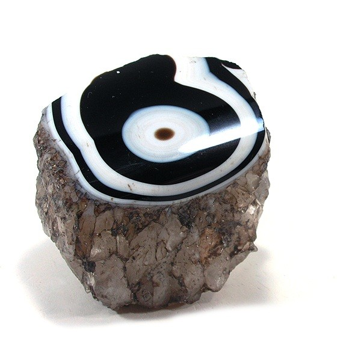

Agate
Agate is a many-coloured stone: some are black with white bands or circles, others bear yellow veins, blood-like spots, coral-red colours, or figures of woods and beasts. ¹ ² ³ ⁵ ⁶ Its virtues include healing venomous bites, preserving sight, strengthening the wearer, and averting tempests; ⁴ ⁶ these virtues belong to particular forms and preparations, as set out below.
Generic
Description
Agate takes many colours and figures according to its kind and place of generation. The common Sicilian form is black, crossed by white veins or rings. ¹ ³ ⁶ Other forms are coral-like, black with yellow veins, variegated with blood-like spots, or figured with forests, animals, flowers, birds, and human images. ¹ ⁵ The bluish stone with a white outer mantle, compared to a hoof or ivory and to Hyacinth, is found among the Scythians; ² its relation to agate is uncertain.
Properties
All agates strengthen the wearer, give a healthy complexion, eloquence, grace, and favour, and help him overcome danger. They also make their bearer solicitous. ⁵ ⁶ One kind gives myrrh-like fumes when scattered on an altar. ⁵ When the black-and-white kind is placed beneath a sleeper's head, it brings many dreams. ¹
For venom from a spider or other vermin, heat the stone in the sun or on a hot tile and lay it upon the painful place. Reheat it, hold it over steaming water, then place it briefly in that water. A linen cloth dipped in the water and laid over the bite draws out the poison and heals the wound. ⁴ The lion-coloured, Cretan red-and-gold, and Indian kinds have further antidotal virtues described under their subtypes. ² ⁵ ⁶
An agate warmed next to the bare skin makes the bearer capable, judicious, and prudent in speech. ⁴ A person afflicted with epilepsy or lunacy may wear it against the skin and use water in which the stone has rested to prepare food and drink. For epilepsy, place the stone in water at the full moon for three days; ⁴ on the fourth day remove it, gently warm the water without boiling, and use it for all food and drink while the moon wanes. ⁴ Continue for ten months. For lunacy, when an illness is impending, begin the same preparation three days beforehand and use it for food and drink during the illness; five months of this practice restore sense and health.
To hinder thieves, carry a clearly visible agate through the length and breadth of the house in the form of a cross each night. ⁴ Burning agate produces fumes that avert storms and halt the flow of rivers. ³
Engraving
Engraved figures add distinct virtues to the stone. ⁶
- A man holding a viper repels its venom; engrave him on Sicilian agate and place the stone over the puncture or grind it and drink it in wine. ⁶
- The constellation Serpentarium engraved on Sicilian agate doubles its power against poison. ⁶
- A rooster or three young women gives grace among men and power over spirits of the air, and serves in magical arts. ⁶
- A complete winged horse brings victory and prudence in all actions. ⁶
Varieties
| Form | Appearance and place | Distinctive virtue |
|---|---|---|
| Black-and-white ¹ ³ ⁶ | Sicilian; black with white veins or circles. | Dreams when placed beneath a sleeper's head; the Sicilian kind also counters viper and scorpion venom. |
| Cretan black-and-yellow | Black with yellow veins; ¹ Crete. | Overcomes perils, strengthens the body, protects against adversity, and makes the wearer pleasing, persuasive, eloquent, and of good colour. |
| Indian blood-spotted | Variegated like blood drops; ¹ India. | Preserves sight and counters thirst and poison; gives a strong smell when burned. |
| Lion-coloured ² | Scythian kind. | Ground with water and applied to the place, wards off venom from viper and scorpion bites and like poisons. |
| Cretan red-and-gold ⁵ | Coral-red, speckled with gold dust; Crete. | Counters swallowed poison and venomous snakebites. |
| Indian figured ⁵ | Veins form woods and animals; India. | Quenches thirst when held in the mouth and eases tired eyes; it also repels venomous creatures, strengthens sight, grants victory and strength, and repels tempests and lightning. ⁶ |
| Cretan Coral-like Agate ⁶ | Coral-like, with veins or spots; Crete. ¹ | Sharpens sight, quenches thirst, counters poison, and gives grace, eloquence, preservation, and strength. |
Subtype I: Black-and-white Agate

The image shows onyx variety agate (source).

The black-and-white agate brings dreams when placed beneath the sleeper's head. ¹ The Sicilian kind also serves against viper and scorpion venom: lay it upon the puncture or grind it and drink it in wine. ⁶
Subtype II: Cretan Black-and-yellow Agate

The image shows black/yellow/crimson agate (source).

The Cretan black-and-yellow kind overcomes perils, strengthens the body, and protects against adversity. ¹ It gives the wearer a pleasing appearance, persuasion, and eloquence.
Subtype III: Indian Blood-spotted Agate

The image shows Eye Agate (source).

The Indian blood-spotted kind preserves sight and counters thirst and poison. ¹ When burned, it gives a strong smell.
Subtype IV: Lion-coloured Agate

A rough agate specimen displays warm tawny, brown, and red colors (source). Ground with water and anointed on the affected place, the lion-coloured kind wards off venom from viper and scorpion bites and like poisons. ²

Subtype V: Cretan Red-and-gold Agate

The image shows red-and-yellow banded agate from Brazil (source).

The Cretan red-and-gold kind protects against poison swallowed in drink and against venomous snakebites. ⁵
Subtype VI: Indian Figured Agate

Brazilian dendritic agate (source).

The Indian figured kind quenches thirst when held in the mouth and eases tired eyes. ⁵ It repels venomous creatures; looking upon it strengthens sight. ⁶ It gives victory and bodily strength, repels tempests, and stops lightning. ⁶
Subtype VII: Cretan Coral-like Agate

The image shows coral agate specimen (source).

The Cretan coral-like kind sharpens sight, quenches thirst, counters poison, and gives the wearer grace and eloquence; ⁶ it also preserves and strengthens him. ⁶
Sources
1. St. Albertus Magnus — The Book of Minerals, Tractate II, Chapter 1: “Agathes”
Agathes (agate) is a black stone with white veins, and there is also found another kind of this stone that is like coral. And a third kind, which mostly occurs in the island of Crete, is black with yellow veins in it. And a fourth kind, from India, is variegated, as if sprinkled with drops of blood. The first kind is well suited to those forms that are engraved on stones; and therefore most of the stones that have the heads of kings engraved on them are black. When placed under the head of a sleeper it is said to show him many dreams in his sleep. But the third kind, from Crete, Avicenna says enables one to overcome perils and gives strength to the body; and according to Evax, King of the Arabs, it makes a man pleasing and agreeable and persuasive, and of good colour, and eloquent, and protects him against adversity. But the Indian kind preserves the sight and is good against thirst and poison. When burnt, it has a very strong odour.
2. St. Epiphanius — On the Twelve Gemstones, eighth stone (Asher’s tribe)
It has been supposed that the name of the Agate stone comes from Perileukios, which is found according to the similarity of the hyacinth stone. Glorious in its appearance it is bluish, having a white outer mantle, according to the appearance of hooves or also ivory. And the same is also found in the dwelling places of the Scythians. Among these stones, however, agate is found as one that has the color of a lion: Ground however with water, anointed on the places, it wards off poisons that come from viper and scorpion bites and the like. But this I say about the lion-like agate.
3. St. Isidore of Seville — Etymologies, Book XVI, XI.1
Agate (achates) was first found in Sicily, near the river of the same name, and afterwards in many lands. It is black and has in its middle black and white circles, joined together and variegated, like haemitite. With the fumes of agates magicians, if it may be credited, ward off storms and halt the flow of rivers. — Etymologies XVI.xi.1
4. St. Hildegard of Bingen — Physica, Stones, XVI: “Agate”
Agate (achates) is born from certain sand of water which extends from the east to the south. It is hot and fiery, but has greater power from the air and water than from fire. When the water abates, uncovering the sand, a certain area of the sand is suffused with the heat of the sun and the purity of the air, so that the stone begins to gleam. Abundant waters then flood over, lift the stone from the sand, and carry it to other lands.
If a spider or any other vermin pours its poison on a person, one may prevent it from entering his body by making an agate very hot, either in the sun or on a hot tile. Placing it on the painful spot will take away the poison. The person should again heat it in the same way and hold it over the steam of hot water, so that its sweat mixes with the water. He should then place the stone in the water for a little while and afterward dip a linen cloth in the water. With this cloth, he should cover the place where the spider bit, or where other poison was poured, and it will be healed.
If someone carries an agate with him, he should place it next to his bare skin, thus warming it. Its nature will make this person capable, judicious, and prudent in speech, because it is born from fire and air and water. Just as some bad herb, placed on a person’s skin, sometimes makes a pustule or ulcer rise up, some precious stones, placed on his skin, make him healthy and sensible by their virtue.
A person who has epilepsy or is a lunatic will be better if he always has an agate next to his skin. People are often born with these infirmities; they even attract them from a superfluity of bad humors and pestilence. When the moon is full, an epileptic should place agate in water for three days. On the fourth day he should take it out and heat the water gently, so that it does not boil. He should save this and use it to cook all the food he eats while the moon is waning. He should also place agate in whatever he drinks during this time, whether wine or water. He should do this for ten months, and he will be cured, unless God is unwilling.
Also, a lunatic, when he knows his illness is impending, should, three days before, place this stone in water. On the fourth day, he should take it out and gently heat that water. He should cook in it all the foods which he will eat while he is in his senseless state. He should also put the stone in all the beverages he drinks. If he does this for five months, he will recover his sense and good health, unless God forbids it. He will be resuscitated by the virtue of this stone in gently heated water. Lest he be injured by the heat of this stone, his foods should be prepared with this water and his drinks prepared in the way described. By their moderation, and by the power of God, the humors which brought insanity to him will be sedated.
Also, every night before a person goes to bed, he should carry a clearly visible agate through the length and then the width of the house, in the pattern of a cross. Thieves are then less able to exercise their wills and so profit less in thievery.
5. Marbodus of Rennes — De lapidibus, section II
Achates' stream, which through Sicilia's plains
Winds his soft course renowned in pastoral strains,
Named from himself the Agate first disclosed —
A jet black stone by milky zones inclosed:
With figured veins its varied surface strew'd,
Painted by nature in a sportive mood.
Now regal shapes, now gods its face adorn;
Such the fam'd Agate by King Pyrrhus worn,
Whose level surface the nine Muses graced,
Round Phoebus with his lyre in order placed.
Strange to relate, 'twas to no artist due,
Nature herself the wondrous picture drew.
Another Agate yields the Cretan shore,
As coral red, with gold-dust sprinkled o'er;
An antidote against the poisoned draught,
And for the treach'rous viper's venom'd shaft.
Whilst on that Agate which dark Indians praise
The woods arise, the sylvan monster strays:
Placed in the mouth 'twill raging thirst appease.
And its mild radiance the tired eyeballs ease.
One fumes like myrrh if on the altar strewed;
Another is besprent with drops of blood:
Whilst those which, like the comb, with yellow gleam.
Are most abundant, but in least esteem.
The Agate on the wearer strength bestows.
With ruddy health his fresh complexion glows;
Both eloquence and grace are by it given.
He gains the favour both of earth and heaven:
Anchises' son, by this attendant saved,
O'ercame all labours, every danger braved.
6. Camillo Leonardi — Speculum Lapidum, Book II, Chapter 7 (“Achates”), with related passages in Book III
Achates [Agate] is a stone of various colors, and its colors vary according to the place of its generation. There are many species of this stone, but the most famous are seven particular varieties that vary not only in color but also in virtue, as confirmed by [all] lapidary texts. Sicily was the first to produce agates, which were found near the river Acheus. Hence, for this reason, the Sicilian is ranked first. Then come the Cretan, Indian, Egyptian, Persian, Arabian, and Cyprian. The Sicilian is black intersected by white veins. Crete produces agates similar to coral, with various veins or drops. The Indian has varied colors and veins that sometimes form various images, such as beasts, flowers, or woodlands; sometimes birds and true effigies of kings, as it is said of the agate that King Pyrrhus had. I have also seen an agate on which there appeared seven trees on a flat plain. These [agates] are the best of all. The Egyptian is neither reddish, nor whitish, but is intersected by various veins. Some say that the Persian smells like myrtle when is burned. Dionysius in the Sight of the World affirms that the Persian agates are in the shape of a cylinder, which carried by rivers from the tops of the mountains are driven along the river Choaspes and are found in the sand. The Arabian and the Cyprian are variegated by assorted colors and transparent like glass. The virtues of agates vary according to their diverse species, but they all have this in common: they render men solicitous. The Sicilian, instead, has the virtue of being an antidote to the venom of vipers and scorpions, when placed directly over the puncture, or if ground and drunk in wine. The Indian repels all venomous things. Sight is strengthened by looking at it. It quenches thirst if placed in the mouth. Whoever wears it gains victory: it strengthens [the body], repels tempests, and stops lightning. The Cretan sharpens sight. It extinguishes thirst and poisons, it renders its wearer gracious and eloquent, it helps to conserve and give strength. It seems superfluous to discuss the singular virtues of each when they coincide, thus I shall omit them for the sake of brevity.
Since Sicilian agate has the virtue to repel the poison of vipers, to denote the effect of its virtue, one may find engraved on it the figure of a man that holds in his hands a viper; hence, the engraved image shows the virtue of the stone.
If in the same Sicilian agate is engraved the constellation Serpentarium, found in the heavenly vault, and whose virtue is that of repelling poisons, the constellation will double the virtue of the agate.
Rooster. If the image of a rooster, or of three young women, is found engraved on agate, it renders man gracious to other men, lends him power over the spirits of the air, and is useful in the magic arts.
Winged Horse. If the image of a winged horse, especially in its entirety, is engraved on agate, it will render man victorious and well prudent in all his actions.
7. Bartholomaeus Anglicanus — De proprietatibus rerum, Book XVI, Chapter 11: Achate
Achates is a precious stone, and is black, with white veins, and has that name Achates of a river, that is called so: the which is in Sicily. By the which river that stone was first found, as Isid. says: and is now found in many regions and lands: and a manner kind of that stone is in Creta, as Dioscorides says, with blue veins. And another kind is in India speckled with red drops, as Isid. says. Men believe that the first manner thereof helps witchcraft. For therewith tempest is changed: and slinteth rivers and streams, as it is said. Also Dioscorides says, the same kind is good to the shape of Images of Kings, and to show likens of sleeps. And the manner kind of Creta changes perils, and makes gracious and pleasing, and fair showing and speaking, and gives might and strength. The third manner stone that is of India, comforts the sight, and helps against thirst and venom, and smells sweet if it be near, as Dioscorides says.
8. Thomas Cantimpre — Liber de natura rerum, Book XIV: “On Precious Stones”, Achates — Agate
Agate is one of the twelve stones, found in the eastern river Achates. It is black in colour, intermingled with white veins. It is said that, in engraved gems, it contains figures formed by veins of a single colour; but this is the work of nature, not of art. It drives away poisons, allays thirst, benefits the sight, strengthens health, and makes its bearer agreeable. When placed in fire it gives off a remarkable odour. King Pyrrhus of Egypt is said to have worn this stone on his finger; on it instruments together with the Muses appeared to be depicted, and Apollo stood in the midst of the Muses holding a lyre.